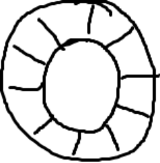
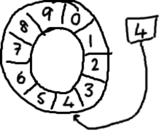
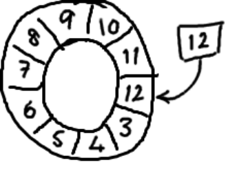

Martin Fowler在自己网站上写了一篇LMAX架构的文章，在文章中他介绍了LMAX是一种新型零售金融交易平台，它能够以很低的延迟产生大量交易。这个系统是建立在JVM平台上，其核心是一个业务逻辑处理器，它能够在一个线程里每秒处理6百万订单。业务逻辑处理器完全是运行在内存中，使`用事件源驱动方式。业务逻辑处理器的核心是Disruptor。
Disruptor它是一个开源的并发框架，并获得2011 Duke’s 程序框架创新奖，能够在无锁的情况下实现网络的Queue并发操作。
Disruptor是一个高性能的异步处理框架，或者可以认为是最快的消息框架（轻量的JMS），也可以认为是一个观察者模式的实现，或者事件监听模式的实现。
在使用之前，首先说明disruptor主要功能加以说明，你可以理解为他是一种高效的"生产者-消费者"模型。也就性能远远高于传统的BlockingQueue容器。
在JDK的多线程与并发库一文中, 提到了BlockingQueue实现了生产者-消费者模型
BlockingQueue是基于锁实现的, 而锁的效率通常较低. 有没有使用CAS机制实现的生产者-消费者
Disruptor使用观察者模式, 主动将消息发送给消费者, 而不是等消费者从队列中取; 在无锁的情况下, 实现queue(环形, RingBuffer)的并发操作, 性能远高于BlockingQueue
Disruptor通过以下设计来解决队列速度慢的问题：
<dependencies>
<dependency>
<groupId>com.lmax</groupId>
<artifactId>disruptor</artifactId>
<version>3.2.1</version>
</dependency>
</dependencies>//定义事件event 通过Disruptor 进行交换的数据类型。
public class LongEvent {
private Long value;
public Long getValue() {
return value;
}
public void setValue(Long value) {
this.value = value;
}
}public class LongEventFactory implements EventFactory<LongEvent> {
public LongEvent newInstance() {
return new LongEvent();
}
}public class LongEventHandler implements EventHandler<LongEvent> {
public void onEvent(LongEvent event, long sequence, boolean endOfBatch) throws Exception {
System.out.println("消费者:"+event.getValue());
}
}public class LongEventProducer {
public final RingBuffer<LongEvent> ringBuffer;
public LongEventProducer(RingBuffer<LongEvent> ringBuffer) {
this.ringBuffer = ringBuffer;
}
public void onData(ByteBuffer byteBuffer) {
// 1.ringBuffer 事件队列 下一个槽
long sequence = ringBuffer.next();
Long data = null;
try {
//2.取出空的事件队列
LongEvent longEvent = ringBuffer.get(sequence);
data = byteBuffer.getLong(0);
//3.获取事件队列传递的数据
longEvent.setValue(data);
try {
Thread.sleep(10);
} catch (InterruptedException e) {
// TODO Auto-generated catch block
e.printStackTrace();
}
} finally {
System.out.println("生产这准备发送数据");
//4.发布事件
ringBuffer.publish(sequence);
}
}
}public class DisruptorMain {
public static void main(String[] args) {
// 1.创建一个可缓存的线程 提供线程来出发Consumer 的事件处理
ExecutorService executor = Executors.newCachedThreadPool();
// 2.创建工厂
EventFactory<LongEvent> eventFactory = new LongEventFactory();
// 3.创建ringBuffer 大小
int ringBufferSize = 1024 * 1024; // ringBufferSize大小一定要是2的N次方
// 4.创建Disruptor
Disruptor<LongEvent> disruptor = new Disruptor<LongEvent>(eventFactory, ringBufferSize, executor,
ProducerType.SINGLE, new YieldingWaitStrategy());
// 5.连接消费端方法
disruptor.handleEventsWith(new LongEventHandler());
// 6.启动
disruptor.start();
// 7.创建RingBuffer容器
RingBuffer<LongEvent> ringBuffer = disruptor.getRingBuffer();
// 8.创建生产者
LongEventProducer producer = new LongEventProducer(ringBuffer);
// 9.指定缓冲区大小
ByteBuffer byteBuffer = ByteBuffer.allocate(8);
for (int i = 1; i <= 100; i++) {
byteBuffer.putLong(0, i);
producer.onData(byteBuffer);
}
//10.关闭disruptor和executor
disruptor.shutdown();
executor.shutdown();
}
}它是一个环（首尾相接的环），你可以把它用做在不同上下文（线程）间传递数据的buffer。

基本来说，ringbuffer拥有一个序号，这个序号指向数组中下一个可用的元素。（校对注：如下图右边的图片表示序号，这个序号指向数组的索引4的位置。）

随着你不停地填充这个buffer（可能也会有相应的读取），这个序号会一直增长，直到绕过这个环。

要找到数组中当前序号指向的元素，可以通过mod操作：
以上面的ringbuffer为例（java的mod语法）：12 % 10 = 2。很简单吧。 事实上，上图中的ringbuffer只有10个槽完全是个意外。如果槽的个数是2的N次方更有利于基于二进制
之所以ringbuffer采用这种数据结构，是因为它在可靠消息传递方面有很好的性能。这就够了，不过它还有一些其他的优点。
首先，因为它是数组，所以要比链表快，而且有一个容易预测的访问模式。（译者注：数组内元素的内存地址的连续性存储的）。这是对CPU缓存友好的—也就是说，在硬件级别，数组中的元素是会被预加载的，因此在ringbuffer当中，cpu无需时不时去主存加载数组中的下一个元素。（校对注：因为只要一个元素被加载到缓存行，其他相邻的几个元素也会被加载进同一个缓存行）
其次，你可以为数组预先分配内存，使得数组对象一直存在（除非程序终止）。这就意味着不需要花大量的时间用于垃圾回收。此外，不像链表那样，需要为每一个添加到其上面的对象创造节点对象—对应的，当删除节点时，需要执行相应的内存清理操作。
RingBuffer是一个首尾相连的环形数组，所谓首尾相连，是指当RingBuffer上的指针越过数组是上界后，继续从数组头开始遍历。因此，RingBuffer中至少有一个指针，来表示RingBuffer中的操作位置。另外，指针的自增操作需要做并发控制，Disruptor和本文的OptimizedQueue都使用CAS的乐观并发控制来保证指针自增的原子性。
Disruptor中的RingBuffer上只有一个指针，表示当前RingBuffer上消息写到了哪里，此外，每个消费者会维护一个sequence表示自己在RingBuffer上读到哪里，从这个角度讲，Disruptor中的RingBuffer上实际有消费者数+1个指针。由于我们要实现的是一个单消息单消费的阻塞队列，只要维护一个读指针（对应消费者）和一个写指针（对应生产者）即可，无论哪个指针，每次读写操作后都自增一次，一旦越界，即从数组头开始继续读写
如其名，环形的缓冲区。曾经 RingBuffer 是 Disruptor 中的最主要的对象，但从3.0版本开始，其职责被简化为仅仅负责对通过 Disruptor 进行交换的数据（事件）进行存储和更新。在一些更高级的应用场景中，Ring Buffer 可以由用户的自定义实现来完全替代。
通过顺序递增的序号来编号管理通过其进行交换的数据（事件），对数据(事件)的处理过程总是沿着序号逐个递增处理。一个 Sequence 用于跟踪标识某个特定的事件处理者( RingBuffer/Consumer )的处理进度。虽然一个 AtomicLong 也可以用于标识进度，但定义 Sequence 来负责该问题还有另一个目的，那就是防止不同的 Sequence 之间的CPU缓存伪共享(Flase Sharing)问题。
Sequencer 是 Disruptor 的真正核心。此接口有两个实现类 SingleProducerSequencer、MultiProducerSequencer ，它们定义在生产者和消费者之间快速、正确地传递数据的并发算法。
用于保持对RingBuffer的 main published Sequence 和Consumer依赖的其它Consumer的 Sequence 的引用。 Sequence Barrier 还定义了决定 Consumer 是否还有可处理的事件的逻辑。
定义 Consumer 如何进行等待下一个事件的策略。 （注：Disruptor 定义了多种不同的策略，针对不同的场景，提供了不一样的性能表现）
在 Disruptor 的语义中，生产者和消费者之间进行交换的数据被称为事件(Event)。它不是一个被 Disruptor 定义的特定类型，而是由 Disruptor 的使用者定义并指定。
EventProcessor 持有特定消费者(Consumer)的 Sequence，并提供用于调用事件处理实现的事件循环(Event Loop)。
Disruptor 定义的事件处理接口，由用户实现，用于处理事件，是 Consumer 的真正实现。
即生产者，只是泛指调用 Disruptor 发布事件的用户代码，Disruptor 没有定义特定接口或类型。
Producer——生产者接口，第三方线程充当该角色，producer向RingBuffer写入事件。
个人博客 蜗牛